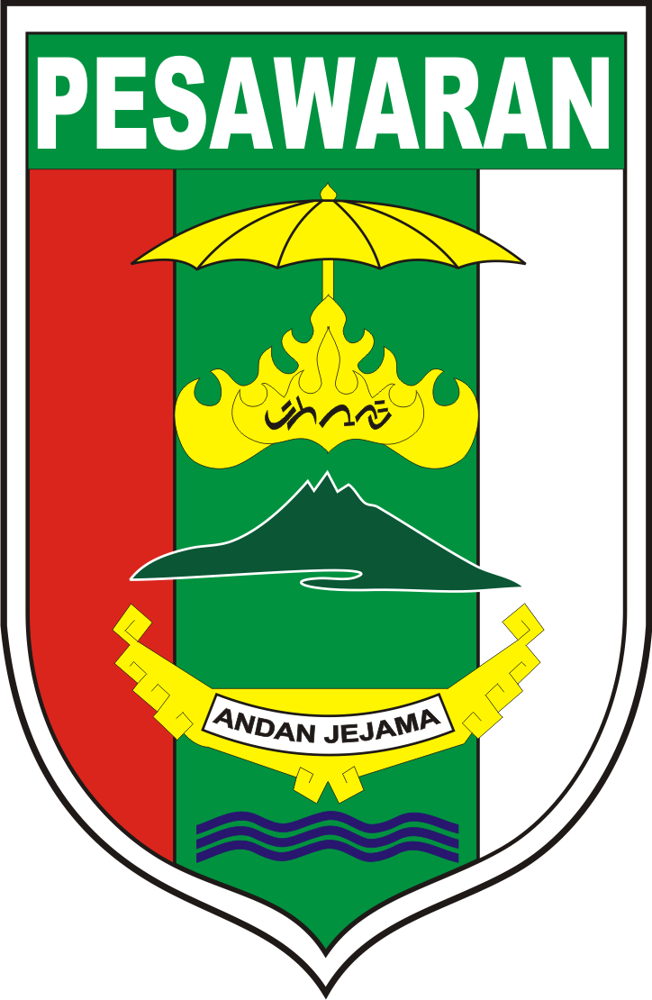
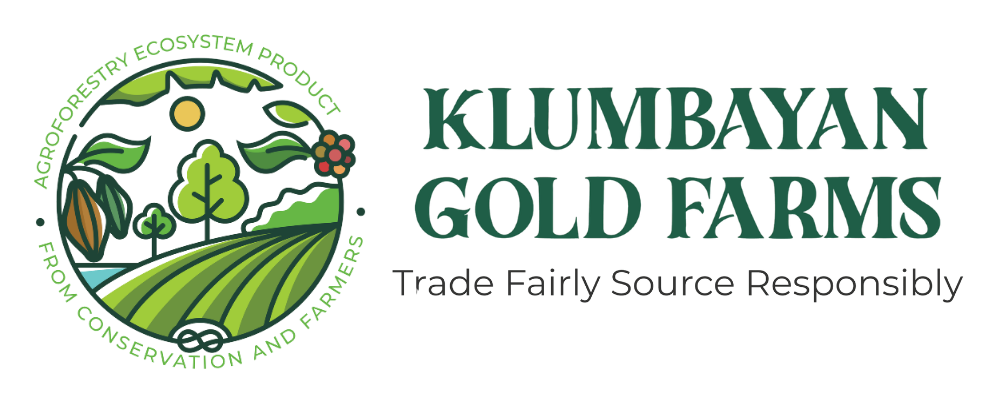
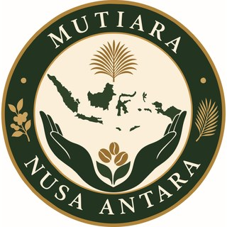
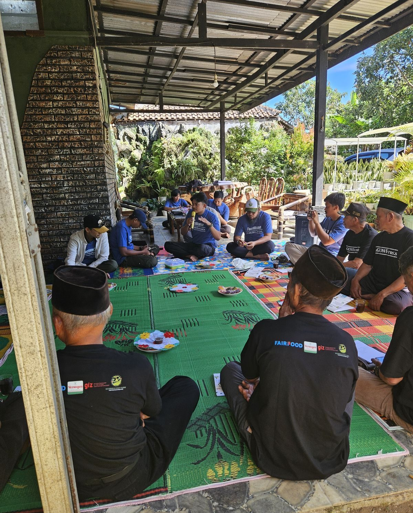

Scroll ke bawah ↓
Fokus utama menyerap 100% produksi biji kakao dari petani binaan di wilayah Kabupaten Pesawaran, menjamin kepastian pembeli.
Edukasi intensif pasca-panen (fermentasi) untuk menaikkan kelas mutu kakao petani dari asalan menjadi specialty standar internasional.
Pabrik akan terus mempekerjakan 3 (tiga) orang tenaga kerja lokal eksisting untuk operasional mesin harian.
Pemasaran global akan menonjolkan produk akhir sebagai hasil bumi unggulan dan kebanggaan Kabupaten Pesawaran.

Pelatihan Petani
Fermentasi dan akses direct trade meningkatkan harga beli di tingkat petani secara radikal. Skala pembinaan kami dirancang untuk menyentuh 1.000 keluarga petani.
Estimasi panen gabungan mencapai 50.000 kg (50 Ton) per bulan dari seluruh Kabupaten Pesawaran.
Bahan baku yang tidak tertampung di mesin pabrik Pesawaran akan diserap sepenuhnya lewat jalur ekspor dan B2B KGF.
Kami tidak membebani APBD sedikit pun. Biaya operasional terbesar dalam program ini dialokasikan di luar pabrik (untuk pemasaran internasional dan pembinaan petani).
KGF menanggung 100% gaji tenaga kerja, listrik, kemasan, pemeliharaan mesin, serta utilitas.
Mencakup pelatihan lapangan berkala, tim tenaga penyuluh, dan investasi pembangunan sentra fermentasi komunal.
Membuka akses pasar global, pengiriman sampel (sample dispatch), sertifikasi, serta pameran dagang B2B.
100% Risiko Pasar dan Kerusakan Mesin Ditanggung oleh KGF
Untuk mengakomodasi sisi birokrasi, kami mengusulkan skema Sewa Barang Milik Daerah (BMD) / Setoran Tetap yang melindungi daerah dari risiko bisnis.